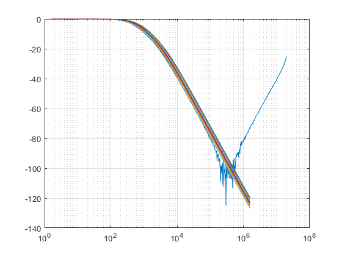

clear all; close all; clc A=dlmread('scope_1.2_modified.csv'); x = A(:,1); y = A(:,2); semilogx(x,y) grid on hold on QX = [66.67, 250, 1*10^-6, 1*10^-6]; b =[1; 0; 0]; w=0:10:10e6; F = freqresp5(QX,b,w,20); semilogx(w/(2*pi),F) grid on xscale log hold off function F = freqresp5(QX,b,w,num) F=[]; % QX is a vector that contains all the nominal element values. % Resistors are listed first (as Q(1),Q(2) and Q(3)), then % capacitors (Q(4)), and finally inductors (Q(5)). num is the % number of different cases that we wish to simulate. for s=1:num Q=variation(QX); % This function produces random variations of the element % values, which are within 20% of the nominal ones. G=zeros(3,3); C=zeros(3,3); L=zeros(3,3); % This line saves us some time, since we now need to enter % only the nonzero elements in G, C and L. G(1,1)=1;G(2,1)=-1/Q(1);G(2,2)=1/Q(1)+1/Q(2);G(2,3)=-1/Q(2); G(3,2) = -1/Q(2); G(3,3)=1/Q(2); C(2,2)= Q(3); C(3,3)=Q(4); % For each new set of element values, matrices G, C and L must % be recomputed. mag=zeros(3,1); % Vector mag is initialized. for k=1:length(w) omega=w(k); % Omega is the next frequency in w. A=G+i*omega*C; x=A\b; % Vector x contains the solution of the node voltage % equations in complex form. mag= [mag abs(x)]; % The magnitudes of all voltages as stored as a new column in % matrix mag. end V3=mag(3,2:length(w)+1); %Since we are interested only in V3, we will extract row 3 of matrix % mag (and ignore the first column). FX=20*log10(V3); hold on; F=[F;FX]; end end function Q=variation (R) m=length(R); g=ones(1,m)+.5*rand(1,m); Q=.8*(R.*g); end
